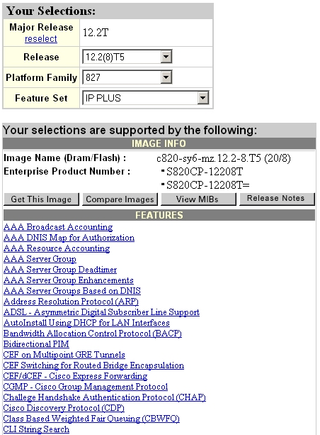

Normalmente, per aggiornare l'IOS di un router, nonostante esistano altri metodi, si utilizza un server TFTP, dal quale, tramite LAN, e' possibile copiare il file fisicamente all'interno del router. Una volta installato su una macchina tale servizio, sara' necessario definire la cartella che contiene l'immagine che vogliamo caricare come directory predefinita del server TFTP. A questo punto dal router sara' necessario impartire determinati comandi.
L'aggiornamento dell'IOS può essere effettuato anche attraverso la modalità ROMMON con Hyper Terminal, che verrà descritta nella sezione specifica, oppure, come viene descritto di eseguito, in modalità privilegiata attraverso telnet.
La prima cosa da fare è determinare se l'IOS che si ha intenzione montare supporti le caratteristiche tecniche del router, in termini di modello del router e dimensione di flash e di memory ram a disposizione.
E' bene anche verificare quali novità presenta l'IOS che stiamo per caricare, quali modifiche sara' necessario apportare alla nostra configurazione, affinche' tutto continui a funzionare correttamente. Sul sito Cisco sono presenti le release note di ogni versione, così da poterci correttamente informare su quel che stiamo per fare.

Per determinare la dimensione della nostra flash e memory ram basta lanciare il comando show version che ci darà le seguenti informazioni:
Cisco827#show version Cisco
Internetwork Operating System Software ROM:
System Bootstrap, Version 12.2(4r)XM2, RELEASE SOFTWARE (fc1) Cisco827
uptime is 6 days, 18 hours, 49 minutes CISCO
C827 (MPC855T) processor (revision 0x501) with 15360K/1024K bytes of
memor y. Configuration register is 0x2102 Cisco827# |
Una volta determinato che l'IOS scelto è compatibile con il nostro router, bisogna determinare la disponibilità di spazio libero all'interno della flash memory, attraverso il comando "show flash" che mostra lo spazio occupato dall'IOS attualmente presente nella flash e lo spazio libero:
Cisco827#show
flash |
E' sempre conveniente e sicuro fare preventivamente un backup dell'IOS attualmente presente nella flash con "copy flash tftp"; verranno chiesti nome del file da copiare, indirizzo del server TFTP e nome con il quale salvare l'IOS:
Cisco827#copy
flash tftp |
Opzionale ma consigliato, copiare anche la configurazione di startup con il comando "copy startup-config tftp":
Cisco827#copy
startup-config tftp |
Dopo queste operazioni preliminari, ma important,i è possibile passare
alla copia vera e propria del nuovo IOS
nella flash del router
con il comando "copy tftp://ip_del_tfp_server/nome_del_file_immagine
flash://nome_del_file_immagine" nel quale sono inseriti già
tutti i parametri dell'indirizzo del server
TFTP e dell'immagine dell'IOS
da copiare oppure facendo uso del comando "copy tftp flash".
Ci verra' chiesto, prima di iniziare la copia, se e' nostra intenzione cancellare
l'attuale contenuto della flash:
dopo avere risposto, avrà inizio l'operazione di copia vera e propria,
al termine della quale, nella maggior parte dei casi, bastera' un reboot per
partire con il nuovo IOS.
Cisco827#copy
tftp flash Verifying
checksum... OK (0x1ABC) |
Il router alla sua partenza cerca sempre, di default, di caricare la prima immagine che trova sulla flash; questo significa che se avevamo una flash abbastanza grande da poter contenere due immagini, e non abbiamo cancellato il file precedente, o l'intera flash, sara' sempre il vecchio IOS a partire. In questo caso sara' necessario impartire nella global configuration il seguente comando: boot system flash nome_del_file_immagine
Bisogna ricordarsi quindi che tale comando potrebbe essere gia' presente nella nostra running-config, e quindi dopo l'upgrade via TFTP, prima del reload, e' bene verificare che sia corretto: avere il nome di un immagine non piu' presente non consente spesso al router di partire correttamente e dovremo quindi lavorare in ROMMON.
Per cancellare dalla flash eventuali files che non ci servono piu' basta digitare delete flash:/nome_del_file_immagine.